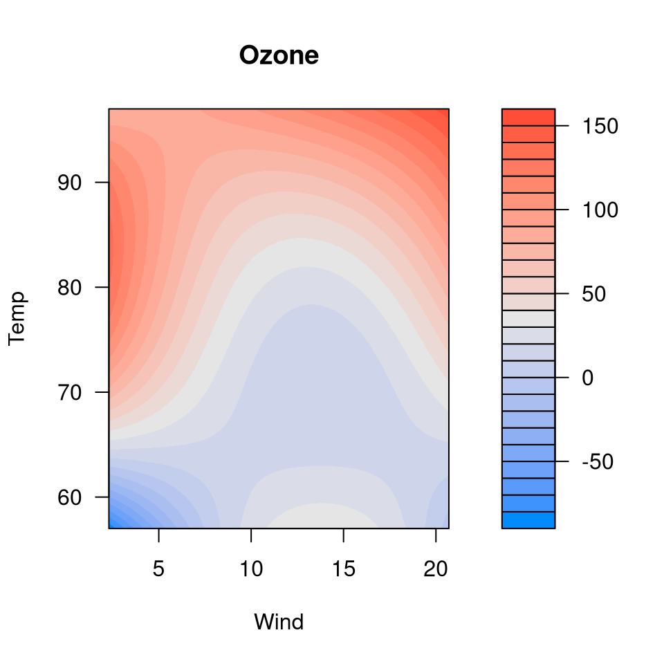
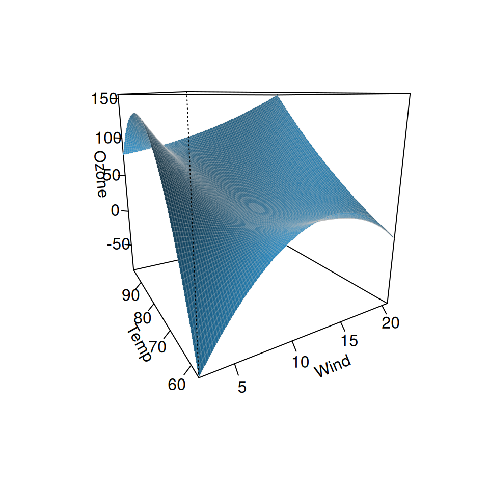

A function used to visualize how two variables interact to affect the response in regression models.
Arguments
- fit
The fitted model object you wish to visualize. Any object with 'predict' and 'model.frame' methods are supported, including lm, glm, gam, rlm, coxph, and many more.
- xvar
Character string specifying the variable to be put on the x-axis of your plot. Both continuous variables and factors are supported.
- yvar
Character string specifying the variable to be put on the y-axis of your plot. Both continuous variables and factors are supported.
- type
The type of plot to be produced. The following options are supported:
If 'conditional' is selected, the plot returned shows the value of the variable on the x-axis and the change in response on the y-axis, holding all other variables constant (by default, median for numeric variables and most common category for factors).
If 'contrast' is selected, the plot returned shows the effect on the expected value of the response by moving the x variable away from a reference point on the x-axis (for numeric variables, this is taken to be the mean).
For more details, see references.
- data
The data frame used to fit the model. Typically, visreg() can figure out where the data is, so it is not necessary to provide this. In some cases, however, the data set cannot be located and must be supplied explicitly.
- trans
(Optional) A function specifying a transformation for the vertical axis.
- scale
By default, the model is plotted on the scale of the linear predictor. If
scale='response'for a glm, the inverse link function will be applied so that the model is plotted on the scale of the original response.- nn
Resolution of the three dimensional plot. Higher values will results in a smoother looking plot.
- cond
Named list specifying conditional values of other explanatory variables. By default, conditional plots in visreg are constructed by filling in other explanatory variables with the median (for numeric variables) or most common category (for factors), but this can be overridden by specifying their values using
cond(see examples).- plot
Send the calculations to
plot.visreg2d, producing a plot? Default is TRUE.- ...
Graphical parameters (e.g.,
ylab) can be passed to the function to customize the plots.
Value
A visreg2d object consisting of:
- x
Values of
xvarto be plotted- y
Values of
yvarto be plotted- z
Values of outcome to be plotted
- meta
Meta-information needed to construct plots, such as the name of the x and y variables.
References
Breheny, P. and Burchett, W. (2017), Visualizing regression models using visreg. https://journal.r-project.org/archive/2017/RJ-2017-046/index.html
Examples
fit <- lm(Ozone ~ Solar.R + Wind + Temp + I(Wind^2) + I(Temp^2) +
I(Wind*Temp)+I(Wind*Temp^2) + I(Temp*Wind^2) + I(Temp^2*Wind^2),
data=airquality)
visreg2d(fit, x="Wind", y="Temp", plot.type="image")

visreg2d(fit, x="Wind", y="Temp", plot.type="persp")

## Requires the rgl package
if (FALSE) { # \dontrun{
visreg2d(fit, x="Wind", y="Temp", plot.type="rgl")
} # }
## Requires the ggplot2 package
if (FALSE) { # \dontrun{
visreg2d(fit, x="Wind", y="Temp", plot.type="gg")
} # }